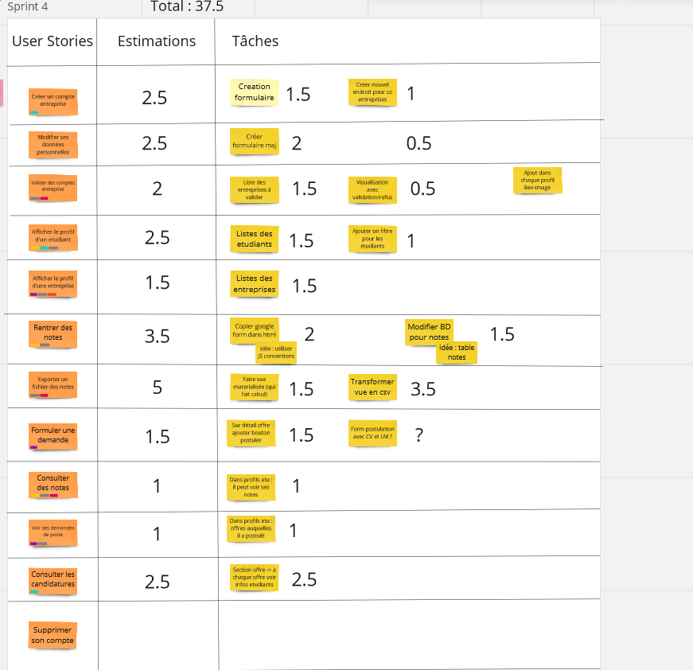
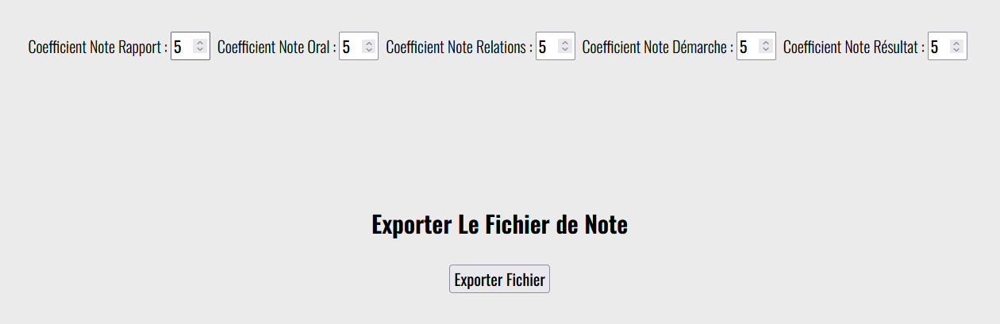

Cette SAE* se concentre sur le développement informatique et web et la méthode gestion de projet Agile. Lors de celle-ci, nous devons en équipe de 5 à 6 personnes :
*SAE = Situation d'Apprentissage et d'Évaluation, c'est un projet qui se passe dans le Cadre du BUT (Bachelor Universitaire de Technologie). Les SAE sont généralement découpées en livrable (listés ci-dessus).
Cette SAE a eu lieu lors du premier semestre du BUT Informatique et s'applique à toutes les UE car c'est le seul projet du semestre.
La SAE a commencé au mois de Septembre et se déroulera normalement jusqu'au mois de Janvier.
Pour le développement, nous utilisons les langages PHP, HTML/CSS et PL/SQL.
Pour la gestion de projet, nous utilisons les outils Miro et Trello.
Le projet est hébergé sur le GitLab de l'IUT.
Dans l'utilisation de la méthode agile, un des rôles principaux est celui du Product Owner. En effet, c'est celui qui fait le lien entre le client (ici un professeur de l'IUT) et l'équipe de développement (mon équipe et moi-même). Il est l'élément clé car c'est grâce à lui que l'équipe sait ce qu'elle doit coder et dans quel ordre.
Mon rôle au sein de l'équipe a surtout été de maintenir les backlogs de sprint sur l'application Miro et de créer des tests d'acceptances à chaque sprint afin que mes coéquipiers puissent vérifier que leur réalisation est conforme aux attentes du client
Le premier sprint s'est concentré sur l'analyse et la création des différentes taches à faire lors du projet. Nous avons utilisé un miro pour mettre à plat tout cela et un trello pour nous aider dans l'organisation des différents sprints.
Nous avons donc démarré par implémenter les fonctionnalités les plus importantes selon le client. Pour ma part, j'ai effectué les pages d'informations globales sur les stages et les alternances (pages statiques en simple HTML/CSS) et enfin j'ai participé à la maquette et au CSS global de notre plateforme.
Lors de ce sprint, je me suis concentrée en majorité sur l'importation de fichiers CSV, venant de PStage et de Studea, via le site. Cette importation devait modifier la base de données afin que le responsable des stages puisse savoir où en est la recherche de stage de chaque étudiant. Cette fonctionnalité le facilite grandement car les fichiers CSV à importer ont plus de 100 colonnes pour chaque étudiant, les rendant illisibles. Le responsable des stages peut donc visualiser les données dans une page dédiée.
Pour faire cela, j'ai donc utilisé un formulaire où le peut insérer plusieurs fichiers à la fois, puis une boucle vérifie le type du fichier et fait d'autres vérifications afin d'insérer les données dans une vue de la base de données. Sur cette vue, il y est implémenté un trigger de type "instead of" afin de récupérer les données et de les insérer/modifier dans les bonnes tables de la base de données.
C'est alors ici que j'ai rencontré une complication. En effet, les trigger instead of n'existe pas sur MySQL. Or, c'est que nous utilisions depuis le début de la SAE. J'ai donc dû migrer la base de données vers PostgreSQL (que je ne connaissais pas). Cela a entraîné d'autres complications, car je l'ai fait en milieu/fin de sprint donc pour la deuxième revue de sprint nous étions sur deux SGBD différents (mauvaise idée).
La première chose qui a été faite sur ce sprint était la gestion de la base de données sous PostgreSQL (ajouter les oublis, vérifier que toutes les fonctionnalités faites depuis le début marche encore). Je me suis ensuite concentrée sur le rework de l'importation, qui n'était pas finie au second sprint, et sur le style de front des pages de profils.
Afin de mieux comprendre le cheminement actuel des conventions de stage au sein du département informatique, j'ai aussi effectué un diagramme d'activité.

Ce sprint a été moins productif que les autres de mon côté et du côté de mon équipe. En effet, cela est du à une perte de motivation générale mais aussi du fait que je suis tombée malade pendant une semaine.
Sur ce sprint, je me suis concentrée sur la gestion des notes de soutenance au sein de la plateforme. J'ai commencé par créer un formulaire multipage basé sur celui des professeurs, que l'on nous avait transmis. Afin de changer chaque page du formulaire j'ai utilisé un script JS.
Ensuite, j'ai effectué une page permettant au responsable des stages mais aussi au secrétariat du département informatique d'exporter les notes des étudiants en un fichier CSV. Sur cette page, l'utilisateur a aussi la possibilité de modifier les coefficients des 5 notes qui composent la note finale de soutenance.
De plus, j'ai ajouté une section notes au profil des étudiants permettant de les consulter lorsque le responsable des stages active la fonctionnalité (via un bouton dans son profil).
Ce projet m'a appris plein de nouvelles compétences comme une nouvelle façon de travailler avec la méthode agile, approfondir le PHP appris en cours.
Ce projet a aussi renforcé mes compétences en travail d'équipe.